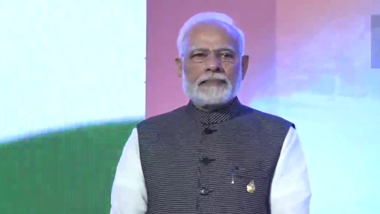
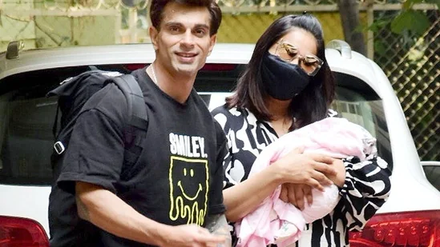
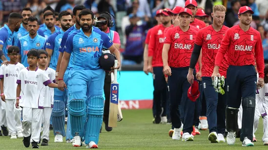
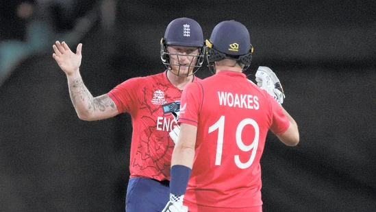
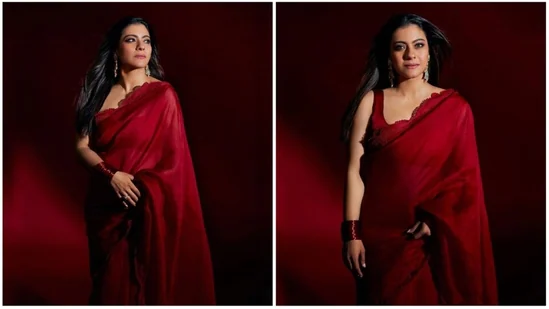
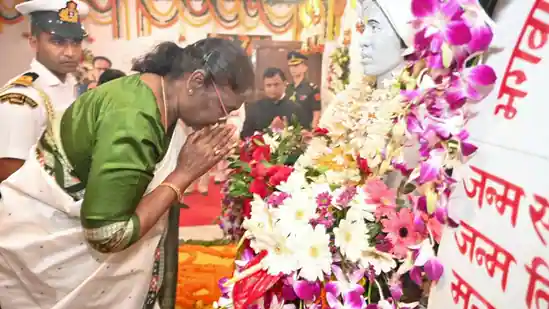
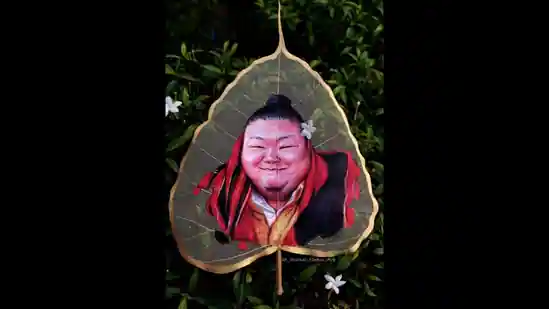
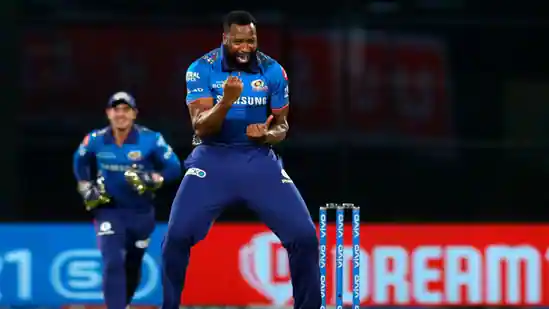
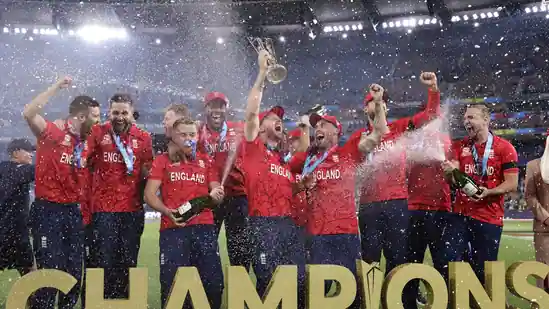

Modi was greeted with "Modi, Modi" chants. Modi also tried his hands at traditional Indonesian musical instruments at the venue.
Published on Nov 15, 2022 01:29 PM IST New parents Bipasha Basu and Karan Singh Grover were clicked returning home with their daughter Devi on Tuesday morning.
Updated on Nov 15, 2022 11:55 AM IST Michael Vaughan, who advised India to 'swallow their pride and follow England' went on to the extent of saying keeping host India as the favourite for next year's ODI World Cup will be ‘utter nonsense’
England were handed a scare when they suffered a collapse in their chase of 142 but Ben Stokes saw them over the line and they qualified for the semi-finals of the 2022 T20 World Cup.
Kajol is the epitome of grace in these pictures featuring the actor in a deep red solid saree which she paired with a matching sleeveless blouse.
Birsa Munda was an iconic tribal leader Birsa Munda who belonged to the Munda tribe. He was born on November 15 in 1875
Assam-based artist Bishal Deka shared Nagaland minister Temjen Imna Along's portrait that he made on peepal leaf on Twitter.
Moments after Kieron Pollard's reitirement announcement, MI's official Twitter handle started saluting the lanky all-rounder. They first changed their display picture to Pollard's photo with "Forever MI" written on it and then shared another photo of Pollard with all the trophies he has won with the franchise.
Sam Curran's three-wicket haul and Ben Stokes' unbeaten half century helped England win their second T20 World Cup title and become the first team to hold both the ODI and T20I world titles.
